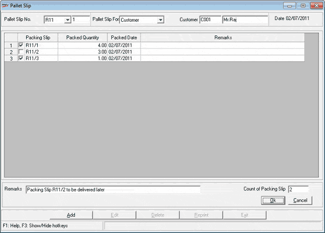

The Pallet Slip window is as shown.

Pallet Slip No.: Select the document prefix. The document number starts as defined in Bill Prefix for each series and gets incremented automatically.
Note: You have to define the prefixes in Bill Prefix option.
Pallet Slip For: Select Customer, Showroom, Vendor, Sales Order or Dispatch Advice from the list. Select the required value. The Pallet Slip is generated based on these selections.
Date: Displays Shoper date.
Carton details grid: All the cartons packed for the selected Customer/ Showroom/ Vendor/ Sales Order/ Dispatch Advice are displayed. Select the required cartons to be added to the pallet.
Remarks: Enter comments, if any.
Count of Packing Slips: Displays the total quantity of cartons selected.
Note: You can print Pallet Slip with a barcode (containing the details of Transaction prefix and Pallet Slip number) as per System Parameter configuration.